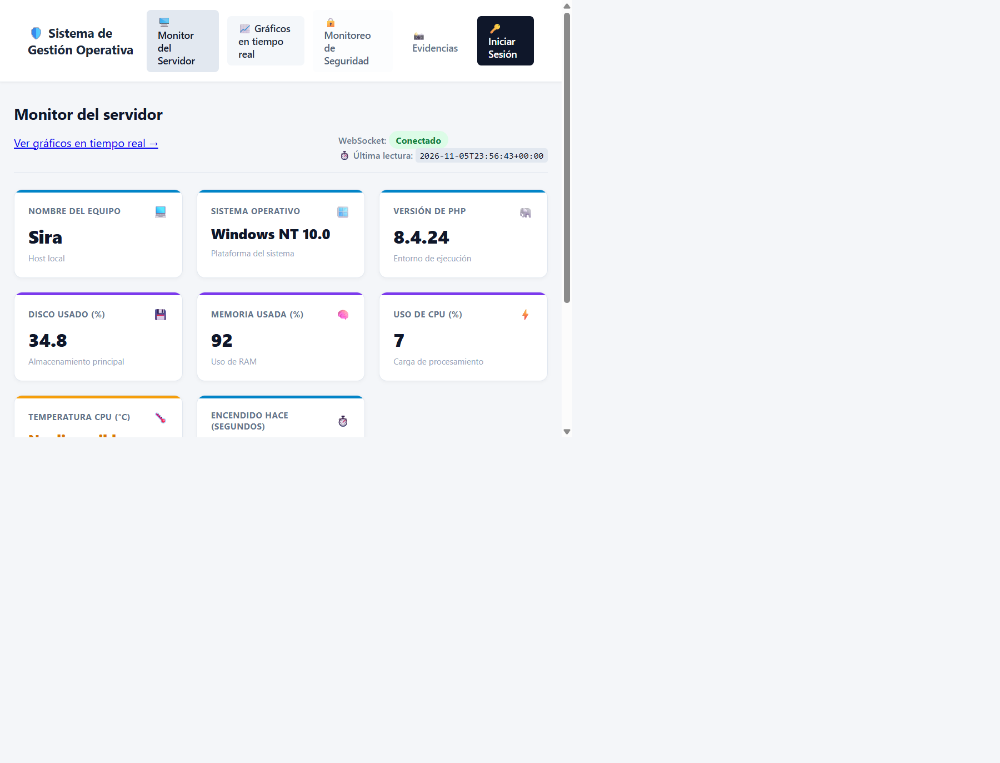
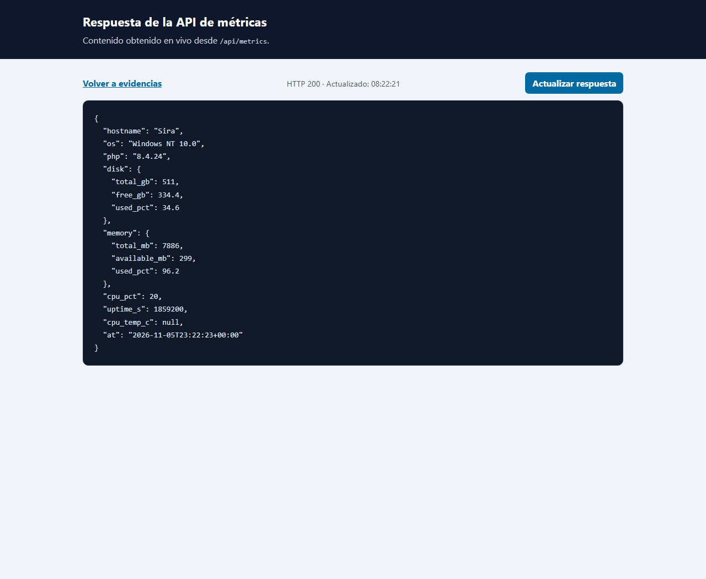
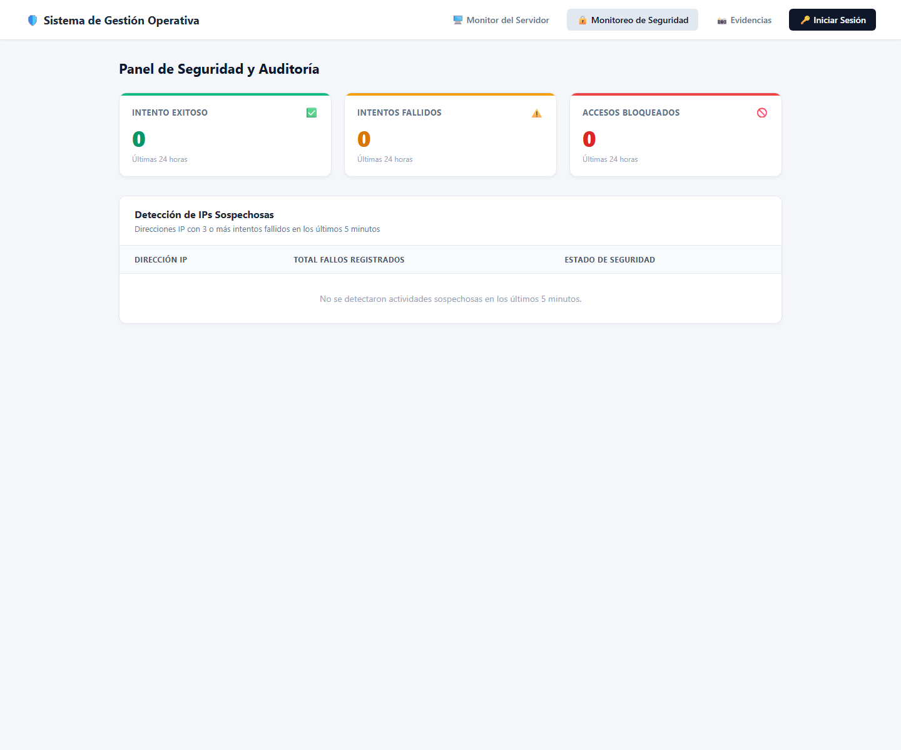
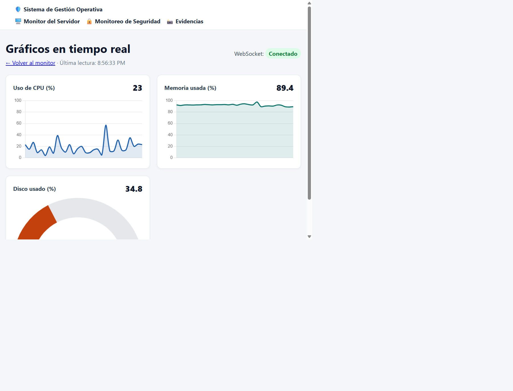

Monitor del servidor — /servidor
Vista del dashboard con las métricas disponibles en el equipo.

Respuesta de la API — /api/metrics
Respuesta JSON obtenida desde el endpoint. Abrir visor en vivo.

Dashboard de seguridad
Panel de auditoría con los indicadores y eventos de acceso.

Gráficos en tiempo real — /graficos
Gráficos que reciben CPU, memoria y disco desde el mismo canal WebSocket.